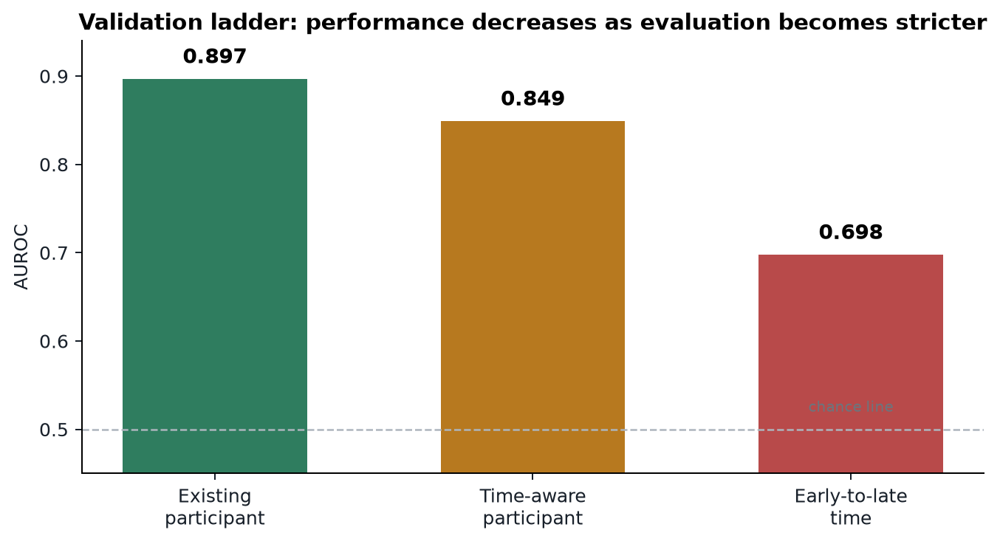
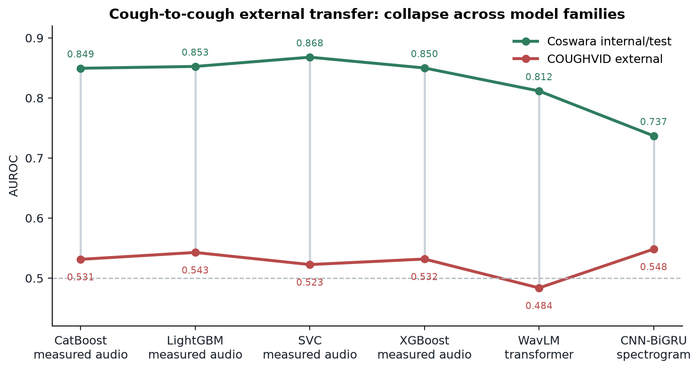
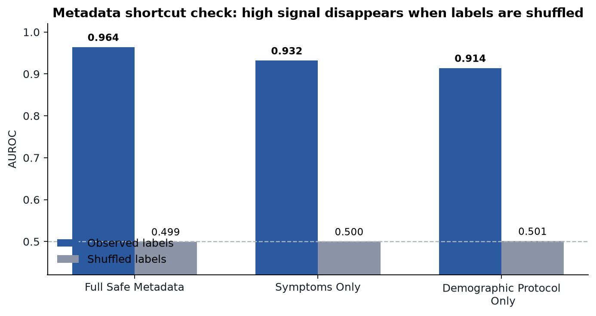
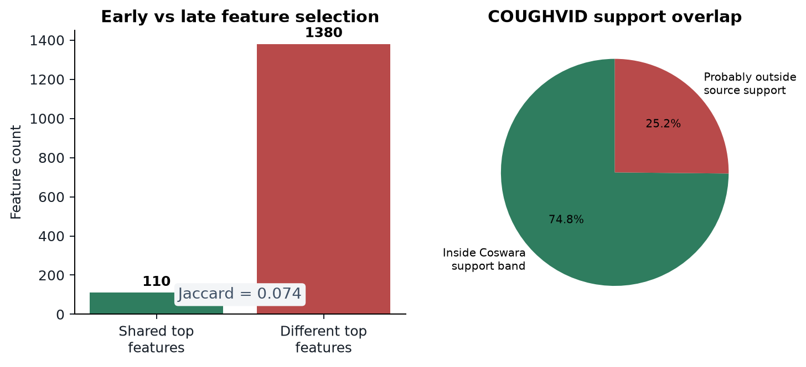
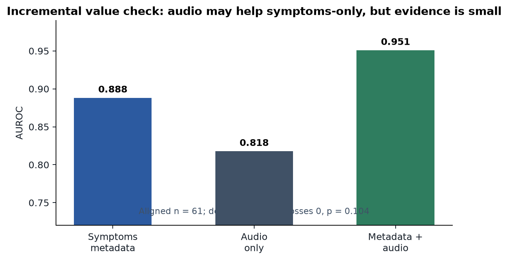
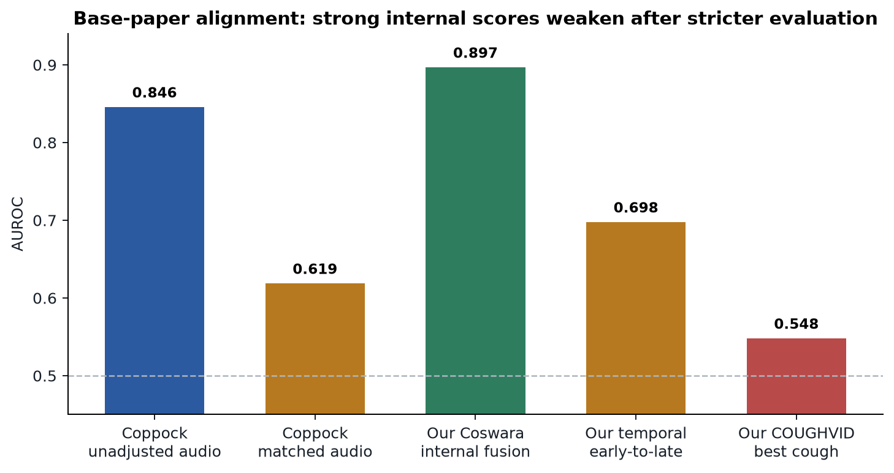

Reliability of COVID-19 Respiratory-Audio Screening Under Temporal and External Dataset Shift
A strong Coswara model was built first; stricter temporal and external validation then tested whether high internal COVID-audio metrics support real screening claims.
Strong internal pipeline
0.897 AUROCBest internal multimodal Coswara result using cough + speech fusion.
Strict validation exposes drift
0.698 AUROCEarly-to-late temporal validation, closer to training on past data and testing future data.
External transfer collapses
0.523-0.548 AUROCCOUGHVID cough transfer remains weak across measured audio summaries, WavLM, and CNN-BiGRU.
Complete pipeline: audio measurements -> feature selection -> multimodal fusion -> strict validation
cough, breath, speech + participant metadata
duration, loudness, MFCCs, mel bands, frequency shape, noisiness
ComParE 2016 + IS10 standard audio descriptor sets
from ~10,147 columns using train-only LightGBM ranking
LightGBM, CatBoost, XGBoost, SVC, WavLM, CNN-BiGRU; uniform, weighted, and stacked fusion
Features in easy words
- How long the sound is and how loud it is.
- Where the frequency energy lies: low, middle, high, sharp, noisy, or flat.
- MFCC and mel-band summaries: compact fingerprints of sound texture.
- How sound properties change over time: delta and delta-delta features.
Fusion weights actually used
- Uniform mean: each available modality/model probability gets equal weight.
- Validation-weighted mean: models with stronger validation AUROC/AUPRC get higher weight.
- Stacked logistic fusion: a small logistic regression learns weights from validation predictions.
- Selected combinations: cough+speech was best internally; cough+breath+speech was also tested.
Validation ladder: performance drops as the test becomes more realistic

| Evaluation | AUROC | AUPRC | Meaning |
|---|---|---|---|
| Existing participant split | 0.897 | 0.863 | Strong internal performance |
| Time-aware participant split | 0.849 | 0.783 | Still strong, but lower |
| Early-to-late temporal split | 0.698 | 0.896 | Calendar drift damages reliability |
| Multi-seed temporal mean | 0.691 | - | Drop repeats across seeds |
COUGHVID transfer fails even when the comparison is cough-to-cough

| Model family | Internal | COUGHVID | Drop |
|---|---|---|---|
| LightGBM measured audio | 0.853 | 0.543 | 0.310 |
| SVC measured audio | 0.868 | 0.523 | 0.345 |
| WavLM transformer | 0.812 | 0.484 | 0.328 |
| CNN-BiGRU spectrogram | 0.737 | 0.548 | 0.189 |
Shortcut and shift evidence explains the performance collapse



Metadata shortcut
Full safe metadata predicts labels at 0.964 AUROC; symptoms-only reaches 0.932. Shuffling labels drops to chance.
Drift mechanism
Early vs late top-800 audio measurements have only 0.074 Jaccard overlap; 25.2% of COUGHVID is probably outside Coswara support.
Clinical usefulness
At sensitivity >= 0.90, COUGHVID precision is only 0.035-0.037. Audio+symptoms gain is exploratory: p = 0.104.
Base paper: Coppock et al., Nature Machine Intelligence 2024

| Paper / result | Interpretation |
|---|---|
| Coppock et al. Audio AUC 0.846 -> matched 0.619 | Conceptual base paper: audio looks strong before confounder control, then weakens. |
| Our work 0.897 internal -> 0.698 temporal -> 0.543 external best cough | Public benchmark extension on Coswara/COUGHVID with temporal and external validation. |
| ESWA DNDT/DNDF High reported AUCs under its protocol | SOTA comparator, not base paper. Compare carefully because protocols differ. |
| HST / spectrogram transformer | Architecture comparator. We tested WavLM transformer and CNN-BiGRU; external transfer remained weak. |